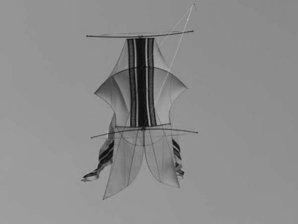
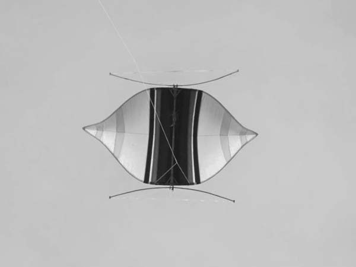
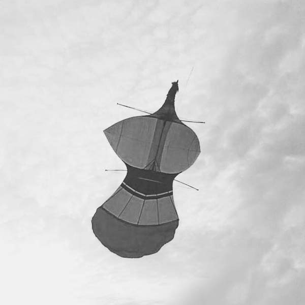
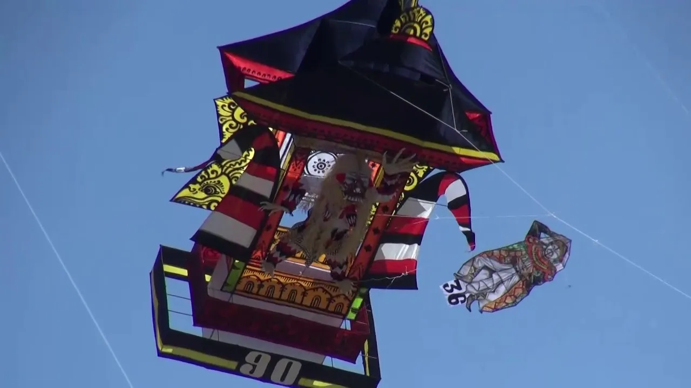

Janggan
Kriteria Layangan Janggan Penilaian berdasar gegulakan,Layangan yang mendapat nilai penuh adalah layangan yang sekali terbang,Tidak boleh cacat terbang,Warna gleber maksimal 4 warna,Pola warna berupa garis,Tapel kategori janggan adalah tapel Naga,Don/bungan guwangan terbuat dari daun lontar.
Bebean
Kriteria Layangan Bebean Penilaian berdasar gegulakan diudara,Layangan yang mendapat nilai penuh adalah layangan yang sekali terbang,Layangan yang naik 2 kali/lebih akan didiskualifikasi,Tidak boleh cacat terbang,Warna dasar yg diperbolehkan adalah Catur Warna,Guwet warna bisa horizontal/vertikal/diagonal,Don atau bungan guwangan harus terbuat dari daun lontar.
Pecukan
Kriteria Layangan Pecukan Penilaian berdasar gegulakan diudara,Layangan yang mendapat nilai penuh adalah layangan yang sekali terbang,Layangan yang naik 2 kali atau lebih akan didiskualifikasi,Tidak boleh cacat terbang,Warna dasar yg diperbolehkan adalah Catur Warna,Guwet warna vertikal,Don/bungan guwangan terbuat dari daun lontar.
Janggan Buntut/Kuwir
Kriteria Layangan Janggan Buntut/Kuwir Penilaian berdasar gegulakan diudara,Layangan yang mendapat nilai penuh adalah layangan yang sekali terbang,Layangan yang naik 2 kali/lebih akan didiskualifikasi,Tidak boleh cacat terbang,Tapel yang digunakan adalah berupa tapel paksi,Penukub layangan Janggan Buntut/Kuwir bebas mengambil unsur Catur Datu,Don atau bungan guwangan harus terbuat dari daun lontar.

Bebean Khas Sanur
Kriteria Layangan Bebean Khas Sanur Penilaian berdasar gegulakan diudara,Layangan yang mendapat nilai penuh adalah layangan yang sekali terbang,Layangan yang naik 2 kali/lebih akan didiskualifikasi,Tidak boleh cacat terbang,Warna dasar yg diperbolehkan adalah Catur Warna,Guwet warna bisa horizontal/vertikal/diagonal,Don atau bungan guwangan harus terbuat dari daun lontar.
Kreasi
Kriteria Layangan Kreasi Penilaian diudara dinilai dari kesuksean terbang berlandaskan rangka bangun/konstruki,Tema layangan kreasi TIDAK BOLEH mengandung unsur pronografi dan SARA,Layangan yang akan mendapat nilai penuh adalah layangan yang sekali terbang tidak jatuh,Layangan yang naik 2 kali atau lebih akan didiskualifikasi,Tidak boleh cacat terbang,Penukub layangan bebas boleh terbuat dari kertas, kain maupun daun,Warna bebas.